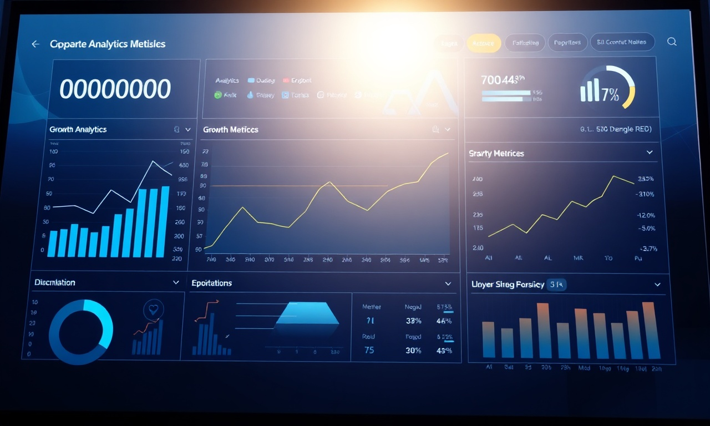

Les écrans LED changent la donne pour la communication visuelle au Maroc. Que vous soyez à Casablanca, Rabat ou Marrakech, ils offrent une flexibilité et un impact que les supports classiques n'ont pas. Voyons comment l'affichage dynamique LED peut vraiment booster votre visibilité et vous rapporter.
C'est quoi, l'Affichage Dynamique LED ?
L'affichage dynamique LED, c'est l'utilisation d'écrans à diodes électroluminescentes pour diffuser du contenu multimédia en temps réel. Contrairement aux affiches statiques, ces écrans peuvent programmer des messages, des vidéos, des animations et des flux d'infos. Au Maroc, on les voit de plus en plus dans les centres commerciaux, les gares, les aéroports et les espaces publics.
Comment ça marche, ces écrans LED ?
Les écrans LED sont faits de modules de diodes qui produisent une lumière intense et une haute résolution. Un logiciel de gestion de contenu (CMS) les contrôle, permettant de planifier et de mettre à jour les affichages à distance. Ils consomment moins d'énergie que les écrans LCD traditionnels, ce qui en fait une solution durable.
Pourquoi les entreprises marocaines devraient passer aux écrans LED
- Impact visuel maximal : Les couleurs vives et la forte luminosité attirent l'œil, même en plein soleil.
- Flexibilité de contenu : Vous pouvez changer vos messages, promotions ou infos en un instant.
- Engagement client : Les vidéos et animations retiennent l'attention 40% plus longtemps (source : Nielsen).
- Réduction des coûts : Fini l'impression de bannières ou d'affiches à chaque changement.
- Image de marque moderne : Ça donne une image innovante et technologique.
Exemples concrets au Maroc
| Secteur | Utilisation | Exemple |
|---|---|---|
| Commerce de détail | Promotions en temps réel, vitrines interactives | Centre commercial Morocco Mall |
| Hôtellerie | Affichage des menus, événements, directions | Hôtel Farah Casablanca |
| Transport | Horaires, annonces, publicités | Aéroport Mohammed V |
| Santé | Files d'attente, informations patients | Clinique Agdal Rabat |
Comment choisir votre écran LED ?

Plusieurs critères comptent : la taille de l'écran, la résolution (le pixel pitch), la luminosité (en nits), et l'emplacement (intérieur ou extérieur). Pour un usage extérieur au Maroc, visez une luminosité supérieure à 5000 nits pour lutter contre l'éblouissement du soleil. Le pixel pitch (la distance entre deux pixels) détermine la netteté : un pitch de 2-3 mm pour une vue rapprochée, 6-10 mm pour une vue éloignée.
Vous souhaitez appliquer ces strategies sans effort ? Nos experts DatRey s'en chargent.
Intégration avec vos autres outils digitaux
L'affichage dynamique LED s'intègre facilement avec vos autres canaux marketing. Par exemple, synchronisez vos écrans avec vos campagnes Google Ads pour renforcer le message. Combinez-le avec une stratégie SEO pour attirer du trafic vers votre point de vente. DatRey propose des solutions clé en main pour une expérience omnicanale.
FAQ
Combien coûte un écran LED au Maroc ?
Le prix varie selon la taille et la technologie. Comptez entre 15 000 et 100 000 MAD pour un écran professionnel. DatRey vous fait un devis sur mesure.
Est-ce que ça vaut le coup pour une petite entreprise ?
Oui, il existe des solutions abordables, comme des écrans plus petits pour les vitrines ou l'intérieur. L'investissement est vite rentabilisé par l'augmentation des ventes.
Quel entretien ça demande ?
Les écrans LED demandent peu d'entretien : un nettoyage régulier et des mises à jour logicielles. DatRey propose des contrats de maintenance.
Et ensuite ?
L'affichage dynamique LED est un investissement stratégique pour toute entreprise marocaine qui veut se démarquer. Sa flexibilité, son impact visuel et son intégration avec d'autres services digitaux comme les réseaux sociaux transforment votre communication. Contactez DatRey, agence digitale à Casablanca, pour une étude personnalisée et un déploiement professionnel. Boostez votre visibilité dès aujourd'hui !
Besoin d'accompagnement ?
Les experts DatRey vous aident à atteindre vos objectifs digitaux au Maroc.
Demander un audit gratuit →